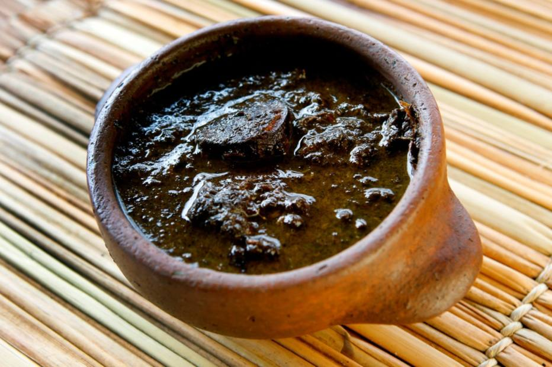

Tacacá
Ingredientes
Ingredientes:
2L de tucupi
500 g de camarão salgado e seco
1/2 xícara de chá de goma de mandioca
4 pimentas-de-cheiro
4 dentes de alho picados
2 maços de jambu
4 folhas de chicória
1 colher de chá de sal
Pimenta-do-reino moída a gosto
4 xícaras de Água
Modo de preparo
Em uma panela, coloque o tucupi, o alho, a chicória, a pimenta-de-cheiro, o sal e a pimenta-do-reino e leve ao fogo médio. Cozinhe por 30 minutos após começar a ferver e reserve. Lave os camarões em água corrente, coloque em uma panela, acrescente 4 xícaras de chá de água e leve ao fogo médio por 5 minutos. Depois, retire os camarões da água, descasque-os e reserve. Adicione a goma de mandioca na panela com a água dos camarões e leve ao fogo médio. Cozinhe até atingir a textura de mingau e reserve. Em outra panela, coloque o jambu, cubra com água e leve ao fogo médio para cozinhar até os talos ficarem macios. Sirva em uma cuia um pouco do caldo de tucupi, da goma, do jambu e alguns camarões.
Maniçoba
Ingredientes
3 kg de folhas de mandioca (maniva) pré-cozidas (por 7 dias)
1/2 kg de toucinho branco
1/2 kg de bacon
1/2 kg de linguiça calabresa fresca
1/2 kg de linguiça calabresa defumada
1/2 kg de pé e rabo de porco salgado
1/2 kg de costela de porco
1/2 kg de paio
3 kg de charque
2 cebolas picadas
4 dentes de alho amassados
4 folhas de louro
Óleo, pimenta-do-reino moída e coentro picado a gosto
Água
Modo de preparo
Em uma panela, coloque a maniva e as folhas de louro e cubra com 1 litro de água. Leve ao fogo baixo e cozinhe por 8 horas. Mexa de vez em quando e acrescente mais água quando estiver ficando seco. Depois, em recipientes separados, deixe de molho em água o pé e o rabo de porco e o charque para retirar o excesso de sal. Em seguida, corte todas as carnes em pedaços médios. Em uma panela, aqueça o óleo e refogue o alho e a cebola até dourar. Acrescente as carnes e refogue até dourar. Coloque as carnes refogadas na panela com a maniva. Tempere com pimenta-do-reino e coentro e cozinhe por 30 minutos. Sirva em seguida com arroz branco e farinha.